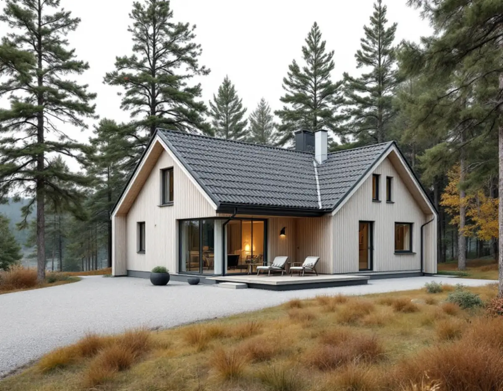
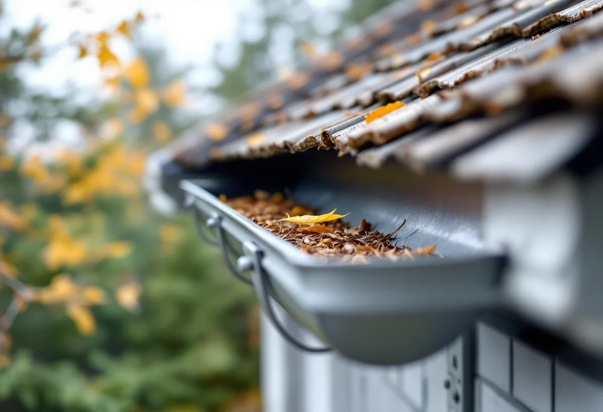

Runt huset
Vi börjar nerifrån: stuprörens skick, utkastare, markens lutning och dagvattenbrunnen.
Tyresö kommun ger villaägare ett konkret råd mot fukt i källaren: se till att stuprören är hela och rätt monterade. Det låter enkelt, men stupröret är ofta den mest bortglömda plåten på huset. Geal Entreprenad AB har egna plåtslagare som byter rännor, stuprör och beslag i Tyresö centrum, Trollbäcken, Krusboda och övriga Tyresö, med gratis platsbesök och skriftligt kostnadsförslag.

På sidan om översvämningsrisker skriver kommunen att dåligt fungerande stuprör och mark som lutar in mot huset hör till orsakerna till fuktproblem i källare. Problem med stuprör uppkommer enligt kommunen oftast när äldre stuprör av järn rostar sönder nere vid källaren. Vatten som rinner ut där hamnar precis intill grunden.
Kommunens råd till fastighetsägare är att se till att stuprören är i bra skick och rätt monterade och att använda utkastare från stuprören. Det första vi gör vid ett besök är därför att gå runt huset och titta på stuprörens nedre meter: rost, sprickor, lösa skarvar och var vattnet faktiskt hamnar.
Ett nytt stuprör behöver inte betyda nya rännor. Är rännan hel och har rätt fall kan stupröret bytas för sig, med en ny utkastare som leder vattnet ut på marken en bit från grunden.

Kommunen räknar upp vad som avgör hur mycket dagvatten en fastighet lämnar ifrån sig: tomtens storlek, hur mycket som är hårdgjort, jordarten, markens lutning, storleken på taket och hur mycket och hur länge det regnar. Som jämförelse anger kommunen att en nylagd dagvattenservis i plast med 160 millimeters ytterdiameter och 1 procents lutning klarar cirka 22 liter i sekunden.
Rännor och stuprör ska klara samma sak i mindre skala. På ett stort tak med få stuprör blir varje stuprör hårt belastat vid häftiga regn, och rännan svämmar över innan vattnet hinner ner. När vi byter avvattning räknar vi därför på takytan som varje stuprör tar emot, och ibland föreslår vi ett extra stuprör i stället för en större ränna.
Kommunen har också gjort en skyfallskartering som visar var vatten riskerar att samlas vid ett så kallat 100-årsregn, men påpekar att den inte bör användas för att förutsäga risken för enskilda byggnader.
Boverket skriver att utvändig takavvattning kan få problem med att det fryser i rännor och stuprör, att stuprör som går ner till marken kan skadas mekaniskt och att renssilen och anslutningen mot dagvattnet kan lossna. Boverket nämner också att träd runt huset ökar risken för att avvattningen sätts igen.
På en tomt med tallar och björkar fylls rännorna med barr och löv, och vattnet blir stående i rännan i stället för att rinna mot stupröret. Det fryser på vintern och kan bända upp skarvar. Vi ser till att rännan har jämnt fall mot varje stuprör, sätter lövsil i rännans utlopp där det behövs och placerar en rensbar del i stupröret ovanför marken.
Hur ofta rännorna ska rensas beror på träden, men en kontroll varje höst efter lövfällningen är en bra vana. Läs mer under hängrännor och stuprör.
När kommunen bygger om en kombinerad avloppsledning i gatan till ett duplikatsystem, med separata ledningar för spillvatten och dagvatten, informerar den berörda fastighetsägare, som då ska separera sitt avlopp inom fastigheten. Kommunen skriver att den inte betalar ersättning för översvämningsskador om fastigheten efter uppmaning inte har separerat avloppet. Stuprör som i dag går till en gemensam ledning kan då behöva kopplas om, så att takvattnet går till dagvattnet eller tas om hand på tomten.
Själva plåtbytet kräver sällan lov. Tyresö kommun skriver att det sedan 1 december 2025 inte krävs bygglov för nytt tak på ett en- eller tvåbostadshus, men påpekar att lov behövs i kulturhistoriskt särskilt värdefulla områden och att uppdaterad information inte finns för alla områden, så det är klokt att fråga kommunen. Mer om taken i kommunen finns under takläggare i Tyresö.
Vi börjar nerifrån: stuprörens skick, utkastare, markens lutning och dagvattenbrunnen.
Rännornas fall, skarvar, beslag och hur mycket barr och löv som samlas kontrolleras.
Vi räknar på takytan per stuprör och föreslår eventuella extra stuprör.
Stuprör, rännor och beslag prissätts var för sig så att du kan välja i vilken ordning.
Gamla järnstuprör och rännor tas ner och ny plåt monteras med utkastare och rensdel.
Vi visar arbetet och hur rännorna sköts inför vintern.
Att reparera, rengöra eller byta ut plåttak, hängrännor och stuprör ger rotavdrag på ett småhus som du äger och bor i. Att dränera husgrunden finns också med i Skatteverkets lista över godkända arbeten.
Avdraget är högst 30 procent av arbetskostnaden, högst 50 000 kr per person och år och högst 75 000 kr tillsammans med rut. Material och resor ingår inte. Geal drar avdraget direkt på fakturan.
Antalet stuprör och hur långa rännorna är, om bara stuprören eller hela avvattningen ska bytas, hur högt huset är och om det behövs ställning på en sluttande tomt. Efter ett gratis platsbesök får du ett skriftligt kostnadsförslag.
Plåttak, hängrännor och beslag.
Plåtslagare i Stockholm →Takbyte, takbesiktning och plåtarbeten.
Takläggare i Tyresö →Solberga, Raksta och Brevik.
Takrenovering i Tyresö →LTA-avlopp, källarbadrum och golvbrunn.
Badrumsrenovering i Tyresö →Startbesked, utstakning och slutbesked.
Byggföretag i Tyresö →Timmerhus, fritidshus och villor i Tyresö.
Fasadrenovering i Tyresö →Gamla bågar och beslag i Tyresö.
Fönsterbyte i Tyresö →Fritidshus som byggts om till villor.
Golvläggare i Tyresö →Stugor som blir helårshus.
Köksrenovering i Tyresö →Rödfärgade hus, stugor och interiörer i Tyresö.
Målare i Tyresö →Stugor, altaner och tillbyggnader.
Snickare i Tyresö →